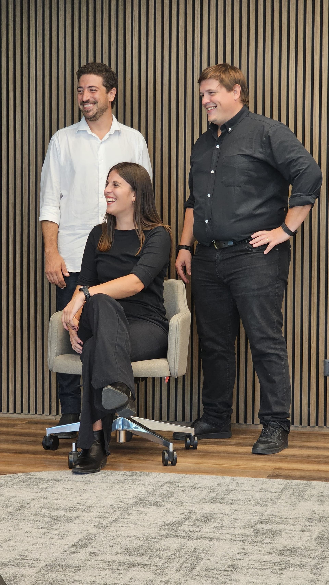
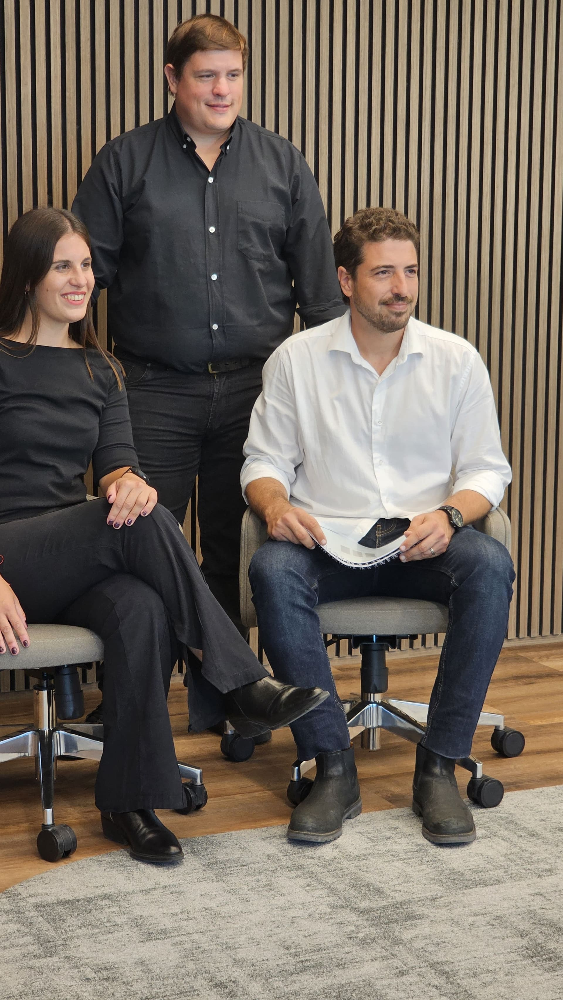

Francisco
Ariel
Angeles
Nuestra historia, construida junto a nuestros clientes.
"La arquitectura no comienza con un plano. Comienza con una relación de confianza."

TKF Arquitectos nació de la unión de tres arquitectos que compartían una misma manera de entender la profesión: escuchar antes de proyectar, comprometerse con cada decisión y acompañar al cliente durante todo el proceso.
Desde el primer día entendimos que un proyecto no se trata únicamente de diseñar un edificio, sino de interpretar una necesidad y transformarla en un espacio que mejore la vida de las personas.
Esa filosofía continúa siendo el punto de partida de cada obra que desarrollamos.

Nuestros primeros proyectos fueron viviendas unifamiliares.
Cada familia nos confiaba el lugar donde iba a construir su historia, y esa responsabilidad nos enseñó que la buena arquitectura está en los detalles, en comprender cómo vive cada persona y en diseñar espacios que puedan ser disfrutados durante muchos años.
Fue en esa etapa donde se consolidó nuestra forma de trabajar: cercana, comprometida y con la participación activa de los socios en cada proyecto.

Con el tiempo ocurrió algo que transformó el rumbo del estudio.
Muchos de aquellos clientes que habían confiado en nosotros para proyectar sus hogares comenzaron a invitarnos a diseñar también los espacios donde desarrollaban sus empresas.
Oficinas, edificios comerciales, plantas industriales y espacios de trabajo comenzaron a formar parte de nuestro día a día.
Ese crecimiento nunca fue planificado. Fue la consecuencia natural de la confianza construida a lo largo de cada proyecto.
Nuestros clientes nos llevaron de sus hogares a sus empresas, y esa confianza continúa siendo, hasta hoy, el motor de nuestro crecimiento.

El mundo comercial nos presentó desafíos diferentes.
Aprendimos que cada proyecto debía responder no solo a las personas, sino también a los procesos, la productividad y los objetivos de cada organización.
Por eso ampliamos nuestra mirada e incorporamos el gerenciamiento de obra, la administración, la gestión de compras y la coordinación integral de cada etapa del proyecto.
Nuestro objetivo dejó de ser únicamente diseñar buenos espacios.
Pasó a ser garantizar que cada proyecto pudiera ejecutarse con el mismo nivel de calidad con el que fue concebido.

Hoy TKF Arquitectos es un estudio especializado en arquitectura residencial y comercial.
Desarrollamos proyectos donde el diseño, la planificación y la construcción forman parte de un mismo proceso, acompañando a nuestros clientes desde la primera idea hasta la entrega de la obra terminada.
La experiencia adquirida en ambos ámbitos nos permite abordar proyectos de distintas escalas y complejidades, manteniendo intactos los valores que dieron origen al estudio: cercanía, compromiso y excelencia.
Con el paso de los años comprendimos que la arquitectura nunca es el resultado del trabajo de una sola persona.
Detrás de cada proyecto existe un equipo de arquitectos, ingenieros, asesores, colaboradores, proveedores, contratistas y equipos de obra que aportan su experiencia y conocimiento para hacer posible cada desafío.
En TKF creemos profundamente en el trabajo codo a codo.
Cada proyecto comienza con una conversación, continúa con cientos de decisiones compartidas y culmina con la entrega de una obra construida gracias al esfuerzo conjunto de todas las personas que participaron en ella.
Por eso entendemos que nuestro trabajo va mucho más allá del diseño.
Coordinamos equipos, articulamos especialidades, resolvemos problemas y acompañamos cada etapa del proceso para que una idea pueda convertirse en una realidad.
Porque, más allá de los planos, los materiales o la arquitectura, lo que realmente construimos son relaciones de confianza.
Creemos que las mejores obras nacen cuando clientes, profesionales y equipos de obra comparten una misma visión y trabajan con un objetivo común.
Esa forma de entender la arquitectura es la que nos acompaña desde nuestros comienzos y la que sigue definiendo a TKF Arquitectos en cada nuevo proyecto.
Primero diseñamos hogares.
La confianza de nuestros clientes nos llevó a diseñar también sus empresas.
Hoy seguimos construyendo relaciones que perduran mucho más allá de cada obra